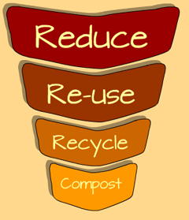

How to prevent land pollution?
Like many other challenges, the best best way to solve problems is to understand it. This means learning about it (like what you are doing now) is the greatest step forward.
Here are a few other tips on how you can help reduce land pollution:
 People should be educated and made aware about the harmful effects of littering. Discuss with friends and family and talk about it.
People should be educated and made aware about the harmful effects of littering. Discuss with friends and family and talk about it.

Reuse any items that you can. Items like clothing, bottles, wrapping paper and shopping bags can be used over and over again, rather than buying new things.
The greatest prevention to land pollution is in the three ‘R's’ …
Reduce Waste, Re-use things and
Recycle things. This is true even for governments. They can also use the three ‘R’ rule to minimize the amount of waste that ends up in landfills. After the three 'R's, remember to turn the rest of the garbge into compost.
Personal litter should be disposed properly. We can separate household waste at home for recycling. More than half of our household waste could be recycled or re-used but once it is mixed up, it becomes more difficult to separate different components for recycling. This is also true for waste we make at school or hospitals.
Buy biodegradable products.
Store all liquid chemicals and waste in spill-proof containers.
Eat organic foods that are grown without pesticides. Look out for fertilizer or pesticide free products when you go to the market.
Don’t use pesticides if you can.
Use a drip tray to collect engine oil.
Buy products that have little packaging.
Don’t dump motor oil on the ground.
Governments can also ensure that there are incentives for people to recycle and re-use things.